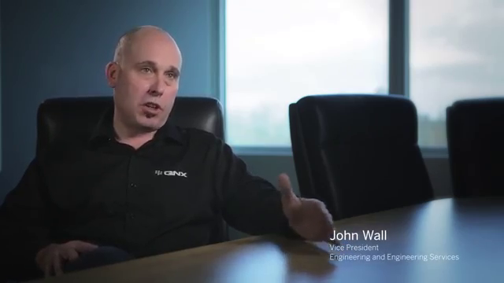

A sleek design of the Interface in the 12-inch portrait (vertical) with the innovative QNX instrumental panel and drivers assistance features. The digital cluster still supports responsive gestures.
In the long list of sophisticated solutions, pre-integrated for different software is dmonstrated and other integrated in-vehicle features. Which include navigation, music, live streaming of sports, news and entertainment content via LTE-Broadcast; enhanced safety features such as lane detection with integrated navigation, driver distraction avoidance notification, smartphone integration and Qualcomm® WiPower™ flexible wireless charging for consumer electronics and; 4G LTE multimode Internet connectivity including WiFi hotspot and Bluetooth profile support.
The slavery to physics was combated by the Advanced drivers assistance systems such as the Digital mirrors, that eliminate blindspots and any other burdens that limit the information a mirror can give to a driver.
Another feature is that of a strip of LED lights at the base of the windshield which refelect on the windscreen and add visiual clue to radar sensors that detect obstacles in the car's path. Warnings are sent to the driver though the digital cluster and digital displays/mirrors.
QNX has used building blocks provided by Qualcomm Snap Dragon Automative development plattforms.
An unusual instance of having a single vendor proving many solutions occured in the exploration of assembling the Maserati Quattroporte GTS.
Solutions such as the application processor, connectivity solutions. These two systems collobarated in prursuit of ensuring that consumer get to experience the best quality of a very fast processor, responsive applications,superior quality graphics and seamless comunication.
"Our heritage is actually safety systems, we meet the highest level of automotive certifications so..WE HAVE THE PEDIGREE TO BE THERE"
